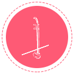
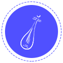
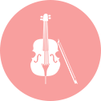

民族乐器
- 笛子
- 唢呐
- 笙
- 葫芦丝
- 管子
-  二胡
- 广东高胡
- 京胡
- 板胡
-  琵琶
-
.png) 中阮
中阮
- 古筝
- 柳琴
- 扬琴
- 箜篌
-
 民族打击乐
民族打击乐
西洋乐器
- 小号
- 长号
-  圆号
- 大号
- 萨克斯
- 长笛
- 黑管
- 巴松
- 双簧管
-
 小提琴
小提琴
- 中提琴
- 大提琴
- 倍大提琴
- 竖琴
- 西洋打击乐
-
 钢琴
钢琴
- 电子琴
- 手风琴
流行音乐
- 吉他
- 贝斯
- 爵士鼓
- 电脑音乐
戏曲
-
.png) 戏曲
戏曲
- 戏曲音乐
声乐
- 美声唱法
- 民族唱法
- 通俗唱法